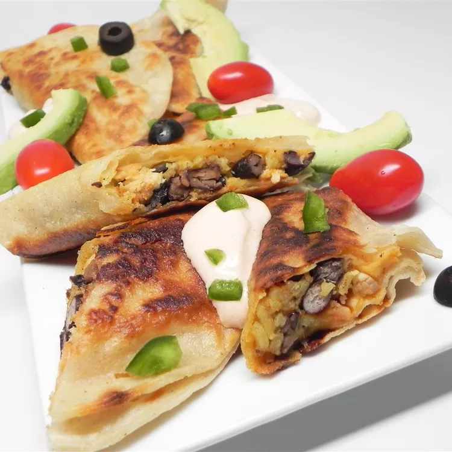

Tex-Mex Tacos

Quick and full of flavor! You can adjust this recipe with parts that you prefer.
Ingredients
- Rice
- Chicken
- Black Beans
- Shredded, Mexican Cheese
- Sliced Olives
- Spices and Seasonings
- Jalepeno Pepper
- Corn Tortillas
- Avocados
- Cherry Tomatoes
Steps
- Boil the rice
- Cook the chicken
- Mix rice, black beans, cheese, olives, and jalepenos into the chicken
- Warm tortillas on a separate skillet
- Fill each tortilla with chicken and rice mixture
- Fry filled tortillas and serve with desired toppings